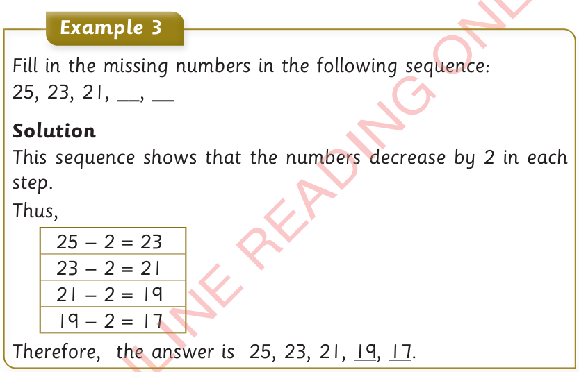
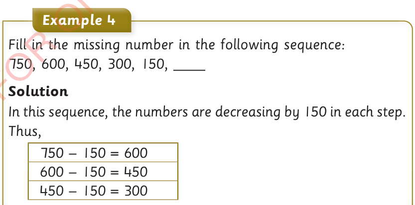

Thus,
1 + 2 = 3
3 + 2 = 5
5 + 2 = 7
7 + 2 = 9
9 + 2 = 11
11 + 2 = 13
Therefore, the answer is 1, 3, 5, 7, 9, 11, 13.

Example 3
Fill in the missing numbers in the following sequence:
25, 23, 21, ___, ___
Solution
This sequence shows that the numbers decrease by 2 in each step.
Thus,
| 25 - 2 = 23 |
| 23 - 2 = 21 |
| 21 - 2 = 19 |
| 19 - 2 = 17 |
Therefore, the answer is 25, 23, 21, 19, 17.

Example 4
Fill in the missing number in the following sequence:
750, 600, 450, 300, 150,
Solution
In this sequence, the numbers are decreasing by 150 in each step.
Thus,
750 - 150 = 600
600 - 150 = 450
450 - 150 = 300